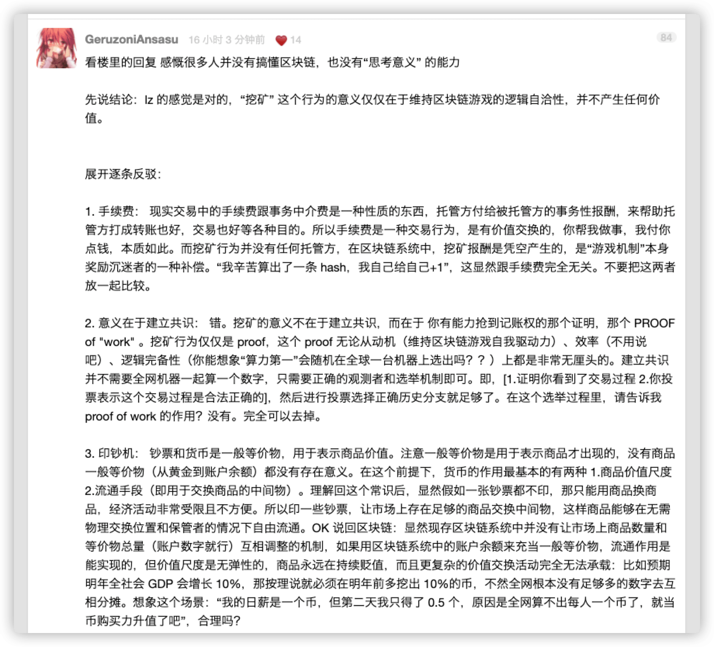

2021 年第二季度总结
这里记录下第二季度自己的一些想法，为了日后翻阅方便！
- 四月
- 陷入虚假工作的陷阱
- 生活让我们变成了一头挨锤的牛
- 挖矿的意义在哪里
- 选择开源项目的几点原则
- 职场踩过的坑
- 五月
- 网络是没有记忆的
- 在不断的决定中成长
- 这个一个畸形的社会
- 理解公司价值观
- 普通人的维权之路
- 如何消灭特权阶级
- 袁老爷子一路好走
- 六月
- 我在武汉整理遗物
- 鸿蒙是套壳的安卓
- 全职爸爸
- 程序员的酒后真言
四月
面试思考记录。
如何在面试中得到有效的认可？我觉得这无非是：
- 在某一特定方向上有独特的积累
- 在标准化的考试中脱颖而出
- 对团队文化的
fit以及认同
即使是一场 intern 面试，我也会尝试去分析他们需要怎样的 permanent employee，这对于精英化的小团队来说可能更为重要。
一 陷入虚假工作的陷阱 - 转载
有些事情需要思考，有些事情需要记住，有些事情需要进步！
如果我们仔细的观察过自己的生活的话，就会发现一个非常令人惊讶的事情，那就是：浪费时间的最危险方法不是花时间在玩，而是花时间在做假工作。
我们在旅行的时候，心会不由自主的放松下来，舟车劳顿的这段时间，虽然有些劳累和辛苦，但是在之后会议起来，还是感觉满满的幸福感扑面而来。但是，如果我们将旅行的这段时间，变成宅在家的生活状态的话，时间一晃而过，等待开始上班的时候，心里总感觉空唠唠的，肯定会觉得自己一定是做错了什么。每天晚上你问自己今天干了什么呢？总结起来的话，那就是虽然很忙，但做的事情却都没什么意义。
你的感觉也会因此不好，但是不像整天看电视那样糟糕。如果我整天看电视，我会觉得自己正在走向灭亡，但如果是忙忙碌碌做无意义的事情，这样的警报就不会响起。因为我所做的事情表面上看起来像是真正的工作，比如处理电子邮件。
表面上看，你一天都在办公桌前工作，但其实你也是在浪费时间，因为这不会让你的生活发生真正的变化。而且由于你的内心不会发出警报，比起看电视，假工作才是浪费时间最危险的方法。时间要用来做对你真正重要的事情，不要落入假工作的陷阱。
二 生活让我们变成了一头挨锤的牛
有些事情需要思考，有些事情需要记住，有些事情需要进步！
今天看到 “秋水逸冰” 在 twitter 上面发了这样一条消息：那一天我二十一岁，在我一生的黄金时代，我有好多奢望。我想爱，想吃，还想在一瞬间变成天上半明半暗的云。后来我才知道，生活就是个缓慢受锤的过程，人一天天老下去，奢望也一天天消失，最后变得像挨了锤的牛一样。可我过二十一岁生日时没有预见到这一点。我觉得自己会永远生猛下去，什么也锤不了我。
在二十一岁，我应该是在上大学，那个时候对很多事情都充满了期待。期待着一次旅行，期待着进入大厂，期待着所有期待的事情。那时候，不敢说精力充沛，但是爬个华山还是响当当的。可能就是因为不知，所以无畏，没有太多的时候阻挡着自己的决定和选择。
随着我们一天天的长大，问题和事情也变得越来越多，考虑和运筹的交际圈也变得大了。这时候上有老，下有小，考虑事情的时候，也需要综合起来决定了。想去旅游，在思考要不要戴上父母和孩子呢？想要换岗位，又担心新的工作充满了一些未知性！想得越多，人就越累。有时候，想想那些自私的人(只考虑自己的人)过的反而更加舒坦。但是这样的事情，自己又做不出来，毕竟现在做不来，估计以后也做不来。
但是，换个角度想问问，事情也并没有那么糟糕。要学会如何灵活的安排和处理生活中的问题，这也是一门学问。不做一头挨锤的牛，做一只飞翔的鹰！
三 挖矿的意义在哪里？
有些事情需要思考，有些事情需要记住，有些事情需要进步！
看到这个话题，其实我自己也没太明白，投入大量的机器资源去计算挖矿到底有什么用，又能够创造什么呢？然后，今天在 v2ex 看到了很多人在讨论这个问题，看了之后也有种貌似顿开的感觉。我这里摘抄了一些自己认为比较好的评论，记录一下。

四 选择开源项目的几点原则 - 转载
有些事情需要思考，有些事情需要记住，有些事情需要进步！
如果不是受项目进度压力所迫，宁愿自己实现。这并非是因为相信自己总能做得更好，而是希望少受牵制，能够自由发挥。而且，写代码往往比理解代码更简单。整合多块不同团队开发的代码也更难保证项目各个部分的一致性。
- [1] 活跃的项目
- 有完整的更新历史
- 真正的用户是软件项目最宝贵的财富
- [2] 主导者是否善于沟通
- 大部分开源项目都有一个灵魂人物，通常是项目的发起人
- 可以脾气不太好，但要能做到讲道理，可以沟通
- 读一下项目的
issues和pull request就能感受的到 - 需要的是沟通能力，而不是编码能力，这将决定了该项目的演进方向
- [3] 项目质量和代码质量
- 当选择了和一个开源项目共进退，就意味着不断的跟进，参与进去，一起把它改进的更好
- 大不了以后再换成另一个类似的模块，或者自己重写
- 选择开源项目其实就是选择了和维护项目的人们合作
- 人才是最重要的因素：应选择 勤奋、开明、专注 的合作伙伴
- [4] 合适的
License协议- 使用一个具备合适的
License的开源项目
- 使用一个具备合适的
五 职场踩过的坑 - 转载
有些事情需要思考，有些事情需要记住，有些事情需要进步！
相信你现在也感受到了我这几年是怎么被坑过来的。我当然希望一切都一帆风顺，但既然事情已经发生，也必须总结一下引以为戒。祝大家职场之路顺利。
- [1] 项目的坑
- 当需求不是直接来源于用户时一定要谨慎
- 老板拍脑袋想出来的，大概率是个坑
- 需求不是直接来源于用户是一个巨大的危险信号
- 内部
2c项目大概率好于2b项目- 成功的内部工具基本都是
2c，很少有2b的，请尽量把时间花在2c的项目上 - 一个开箱即用的任务监控面板是
2c的，一个需要修改release流程才能使用的工具就是2b的 - 真心感觉
2b的东西想推动，要花费几倍于2c工具的时间，效果还未必好
- 成功的内部工具基本都是
- 警惕那些依赖其它组的项目
- 不要相信工程师的口头承诺，要双方对齐，尤其是老板之间
- 对项目的预期、优先级、工期、资源投入，都必须互相知晓并认可，而且要落实到
OKR层面 - 要有定期例会，问题上报渠道一定要通畅，防止对方没有按期交付或出现各种问题
- 了解组里其它人在做什么
- 了解其它人在做什么，即使他们的工作看起来和你毫无关联
- 除了寻找可能的机会，这也有助于站在更高视角全面理解当前的工作
- 说白了就是 “选择大于努力”
- 不要对项目产生感情
- 如果当时抛弃对项目的感情，我完全可以找个更合适的组
- 当需求不是直接来源于用户时一定要谨慎
- [2] 老板的坑
- 不要盲目相信老板
- 换组和换公司是一样的，等着进去再学的人根本拿不到面试
- 老板的话要听，但决策一定要自己做
- 自己做决策，即使错了，也可以复盘反思，并取得进步
- 而让他人做决定，自己将很难进步——对不知道对在哪，错也不知道错在哪
- 警惕只想把你当工具人的老板
- 好的老板要能平衡组与组员的利益，既保证组的发展，又确保个人能够成长
- 判断：看老板给不给你做职业规划
- 判断：看老板对你是否诚实
- 不要盲目相信老板
- [3] 组的坑
- 业务/技术/个人兴趣，至少要占一项
- 有的组业务有前途，有的组技术有挑战，两边都没有的基本就是坑
- 如果某个组做的东西就是你的兴趣所在，那就加入吧，这时候别的都没那么重要了
- 真假基础设施
- 我觉得
true infrastructure一定是有技术挑战的，且至少要服务于某个大部门，而不是一个或几个组
- 我觉得
- 不要去
scope太小和前景莫测的组Scope指一个组负责的工作或者产品有多大
- 业务/技术/个人兴趣，至少要占一项
- [4] 换组心得
- 关注具体的工作内容和大方向
- 只看产品选组还不够，具体的工作内容和大方向也很重要
- 通常来说，一个职位的职责越明确，项目的风险和掉坑的概率就越小，也能让你做出更有根据的选择
Impact是否好兑现- 好兑现的项目简单明了，只要做完了
impact就实打实地在那，不需要费劲给人解释 - 优先选择
impact好兑现的组，一般来说，做新东西比较好兑现 - 好兑现: 实现一个面向用户的新功能、优化响应时间、使用新
API重构系统、给覆盖率很低的项目写单元测试 - 不好兑现: 做一套测试框架(没人用等于零)、重构系统但是功能不变(效果不显著)、优化调试或监控工具(怎么证明改进后比改进前要好)
- 好兑现的项目简单明了，只要做完了
- 和工程师聊天
- 和老板聊天往往容易浮于表面，或者大饼满天飞
- 找到组里的工程师，一般他们都会毫无保留地告诉你真实信息
- 如果你觉得在职员工讲话会有顾虑，也可以找刚转出去的员工
- 什么时候该考虑转组
- 倾向于认为只要满足条件，就可以开始关注新机会了
- 别看每天都有很多组在招人，很多机会错过就是错过了
- 建议人事变动时要立马开始看机会：不论是老板离职还是组织架构调整，只要是人事变动，多多少少一定会影响工作
- 影响可能好可能坏，可能多可能少，你无法预测，所以最好未雨绸缪
- 关注具体的工作内容和大方向
五月
慈母手中线，游子身上衣，临行密密缝，意恐迟迟归，谁言寸草心，报得三春晖。
公司希望员工变成一头驴子，不停追逐挂在眼前的胡萝卜。无论怎么追赶，离目标总是靠近不了，总是只走了百分之一。
鼓吹这种企业文化，就是为了让员工总是绷紧弹簧。虽然员工最终很可能产生倦怠和精疲力竭，但是公司会因为这样而取得成功。公司这样做，并没有错。作为一家公司，旅程没有终点，永远在路上，需要有使命感驱动的员工，所以它们会强调 Day 1。
但是，作为一个员工，你的旅程是有终点的。你不会永远停在 Day 1，也不能停在那里。如果想要成功的人生，必须每隔一段时间，就把人生推进到下一个阶段，完成前一个目标，再朝着更高的目标努力。
曾经有一个统计，同一个工作岗位，平均工作三年，就会产生倦怠。也就是说，就算你一直保持在 Day 1，最多只有三年时间，就坚持不下去了，后面都是煎熬。你必须在此之前，完成当前目标，进入下一个阶段。
一 网络是没有记忆的
有些事情需要思考，有些事情需要记住，有些事情需要进步！
在中国，网络是没有记忆的，很多事件，火极一时，然后销声匿迹！这样的事情，不只是在中国，在任何一个国家都是会出现的。
二 在不断的决定中成长
有些事情需要思考，有些事情需要记住，有些事情需要进步！
人在时间的长河中会无意间做出很多选择，但是在做选择的时候并没有意识到，这个选择会给以后的自己带来怎样的变化。只有当回首往事的时候才发现，原来那时的自己是做了一个多么重大的决定。
三 这个一个畸形的社会
有些事情需要思考，有些事情需要记住，有些事情需要进步！
每个人自从从出生的时候，很多事情和人都已经决定了，这就导致每个人都会拥有属于自己的人生和命运。虽然我们生活中几乎每时每刻都在强调公平和公正，但是很多事情生下来的时候就已经是不公平也不公正的，即这个世界上从来不会存在对决的公平的。
很多事情在小的时候，可能感受不来或者不够那么强烈，但是随着一天天的长大，这个世界的很多问题，都会不由自主的浮现在我们的视野里。比如，各个平台上充满着欺骗的直播带货，不管是网红还是明星，里里外外看看都是一路货色；直播人群的价值导向和人格缺失，真的会让人咋舌，感慨真的这个时代真的什么妖魔鬼怪都有；电视和网络上，贪官、黑恶势力的不断涌现，以及整治。
很多时候，政府的角色并不是将所有的坏人、恶人、光怪陆离的人绳之以法，而是维护这个天平的一个稳定性，起到一个中间人目的。明白了这个答案，很多事情其实我们不用过度关注，我们只需要做好自己就行了。保持自己的内心，让自己发光发就行了。正所谓，达则兼济天下，穷则独善其身。
四 理解公司价值观
有些事情需要思考，有些事情需要记住，有些事情需要进步！
今天看到了 xiantang 写的 《软技能:大厂底层员工打工指南》 博客，有些感悟，写点东西记录一下。
不管你是进入大公司还是小公司，都会潜移默化的了解和接受公司的价值观，但往往对于大公司而言，更为突出一些。虽然每个公司的价值观都有些区别，但是本质不尽相同，就是资本家为了让员工更好的工作想出来的一套方法论，简单理解的话可以类比为 “洗脑”。而这价值观的核心，就是 Owner 意识，有人理解为主人翁意识，有人理解为自我驱动。对我而言，我认为都是正确的，都有其意义。
随着工作时间的拉长，Owner 意识就是你在公司立足的基础，所以我们在做事情的时候也是需要培养和补充 Owner 意识，因为其会驱动我们负起对于项目的责任，想方设法让事情朝好的方向发展，遇到问题就解决问题，这样你和你负责的事情才会有更大的成长。
五 普通人的维权之路
有些事情需要思考，有些事情需要记住，有些事情需要进步！
前几天在 bilibili 上面看到一个房车 up 主杨旭维权的事情，看完之后些许有些感慨！
事情的大致经过就是，up 主杨旭才买没买多久的依维柯房车，因为同一个问题三番五次维修的事情：
- 4 月 26 日
- 仪表盘出现排放系统故障，去了巴彦淖尔服务站但系统未升级不支持国
6底盘，后面升级了也不能支持
- 仪表盘出现排放系统故障，去了巴彦淖尔服务站但系统未升级不支持国
- 4 月 27 日
- 在巴彦淖尔服务站消除故障码，后又出问题
- 5 月 3 日
- 来到银川售后服务点，清洗排放系统喷嘴，收取了但维修前并未提及的人工费
300元。并且费用不能由质保承担，理由是没有使用依维柯专用尿素，可他们并不能提供依维柯专用尿素
- 来到银川售后服务点，清洗排放系统喷嘴，收取了但维修前并未提及的人工费
- 5 月 4 日
- 消除故障码带上银川环城高速试驾，跑完后又出现故障
- 5 月 4 日
- 下午再次回到银川售后服务点，用尽所有办法但始终未能解决。
- 5 月 5 日
- 找出问题了，是因为氮氧传感器出问题，在事前说是用一辆售前的车上现有传感器解决问题，其间也说先解决杨旭的车，他们的车后面自己想办法。在试驾
70公里后，解决问题回到了服务点，工作人员口风变了。说是售前车要参加5.6日的展示，零件不能给杨旭。并拿起了杨旭车钥匙，在杨旭的反对下强制把车开到沟上，取走了配件。
- 找出问题了，是因为氮氧传感器出问题，在事前说是用一辆售前的车上现有传感器解决问题，其间也说先解决杨旭的车，他们的车后面自己想办法。在试驾
质疑的地方：
- 事前并未提及
300块维修费，事后才说！ - 为什么得加依维柯专用尿素，依维柯官方有没有正规的说明文档来解释这些？
- 售后人员对待顾客的态度问题，没有经过授权为什么可以自行拆除汽车零件？
事后在自己的频道录制了对应的视频，说了下自己遇到的问题，期间好几度哽咽和落泪。大概率是因为杨旭还是有不少粉丝，所以直接上了微博热搜，随后收到依维柯道歉信，事情总算得到了合理的解决。
我想如果没有公众的压力，事情那能有这速度解决，要是王旭没有那么多粉丝，一个平常人怎么处理这个事呢？事情出来了，依维柯怎么洗都黑了！
六 如何消灭特权阶级
有些事情需要思考，有些事情需要记住，有些事情需要进步！
什么是特权阶级呢？特权阶级，是指在社会上享有比普通大众更多权利的人群。现在往往是指由于社会制度不公所衍生的特殊阶层，通常是指官僚、富人有享有的特殊权利。亦可指一种政府型式，其主要权力掌控于因出身或财富而拥有崇高地位的人手中。
通俗的来说，类比一下，就是你去医院看病的时候看到有护士带着她奶奶直接就进了医生办公司(甚至都没有挂号)，就是你去排号买房子的时候很多人直接走后门可以提到现房(甚至比你的价钱还便宜)，就是你去预约五价疫苗的时候别人随时都可以打上(甚至根本都没有预约)，等等，等等。
这段时间不是国家开始重点推广全民打疫苗，现在不管是老人还是小孩，统统都放开了。主要的目的就是为了防疫新冠病毒的二次爆发，使全民接种疫苗之后来达到群体免疫的效果，从而最大程度的避免。但是因为有少部分接种完疫苗之后，出现了不适症状，甚至有极少部分人出现了病危以及死亡的个例，导致很多人都保持着围观的态度。后来，随着国家不遗余力的推广，各地都有很多人开始打了，有地方甚至出台了相关的政策，比如没接种疫苗的无法进入 XXX 大厦，甚至更加荒诞的条例，等等。
当然，接种疫苗是一件非常好的事情，毕竟可以有一定程度可以防止危险的降临(我也接种了，并且给家里也预约了)。但是，最近国家发布消息称，6 月 8 日后开始，各地优先保障群众的第二针疫苗的接种，而第一针的接种排后或者推出到 9 月份。本来是一个很普通的信息，但是因为很多营销号和网红的过渡解读，比如有的说 6 月 8 日后打疫苗需要个人支付费用，有的说 6 月 8 日后不打第一针疫苗了。这就导致，很多判断能力不高的人和上年纪的人，基本上把社区医院给包围了。由此而来的就是，很多地方本来有大量疫苗的，结果预约的人太多了，导致供不应求，和一周前出现了鲜明的对比。预测同时，就出现了很多走特权的人了，具体怎么走的我就不多说了，也没什么意思。
而如何消灭特权呢？想了想，好像很难很难。为什么有的人可以走特权呢？有可能是因为他认为某些有特权的人(亲戚或者朋友等)，也有可能是走的后门(塞钱或者资源)，等等。有特权的人，本身就处于社会阶级的上层(相对而论)，其会自发的形成和维护这种特权制度的圈子，为自己或者他人谋福利。而大众的人，都处于社会阶级的底层，很多事情根本不会知道也无从得知。简单来说，就是根本就不知道，或者即使知道了也无能为力，管不了。除非是，侵害了自己的权益，且自己也忍不了，抱着鱼死网破的态度去上访、去上告，但结果往往不会好的。
哎，有点悲观，看的越多，知道的越多，反而越不快乐。
七 袁老爷子一路好走
有些事情需要思考，有些事情需要记住，有些事情需要进步！
有的人活着，却已经死了。有的人死了，却永远活着。
他活着为了多数人更好地活的人，群众把他抬举得很高，很高。
霍金去世了，但我不懂时空。金庸去世了，但我不看武侠。可是我知道，再笨的人，也要吃饭！
六月
肉肉，我是多么的爱你呀！
少一点责备，多一点赞美，孩子就能在鼓励下往正向发展。请仔细观察，孩子一定有许多值得赞美之处还没有被发现，也还有许许多多的赞美方式等着你去寻找。
一 我在武汉整理遗物 - 转载
有些事情需要思考，有些事情需要记住，有些事情需要进步！
从 2020 年 3 月起，为期一年的拍摄、制作过程，让我感到这是一场 “我们能给世界留下什么” 的探寻。整理，或称“断舍离”，是时下城市流行的生活方式，而遗物整理，却有着完全不同的分量与情感。身后之物，仿佛让我们看见它栩栩如生的主人。
整理师西卡赴武汉整理遗物，帮我们推开了其中三个家庭的大门。他们都在疫情中失去了最亲密的人，他们用不同的方式疗愈、纪念。
张明芳的老伴有着数不完的乐器、相机，他的生命曾经如此旺盛，如此热情。敖慕麟的父亲，留下的物品如此之少，支持家人大概就是他的生活重心。饶浩懿对母亲遗物的处理很理性，但思念萦绕在她面对亲情的每一个时刻。世界上没有完全相同的两个人，每一个人通过物品留下的线索，在生者心中刻下不可磨灭的痕迹。
我们认为，在记录新冠疫情的故事中，“家庭”是不可缺席的维度。灾后巨大的悲伤如何安放？每一个家庭都在寻找一条重启的生路，每一个个体都在找寻生活的意义。看见灾难中的个体，尊重生命的价值，疫情就不再是“另一场灾难”而已。
感谢西卡的勇气与努力，感谢让我们见证他们继续生活的三个家庭。他们坚韧、深情、无言地向我们展现了战胜疫情的真正价值。
二 鸿蒙是套壳的安卓？
有些事情需要思考，有些事情需要记住，有些事情需要进步！
鸿蒙虽然基于 AOSP 改的，但未来会离 AOSP 越来越远，甚至慢慢的面目全非都有可能。
- 安卓 =
AOSP(开源) +GMS(Google闭源) - 鸿蒙 =
AOSP(开源-修改很多源码实现更新可能) +HMS(Huawei闭源)
三 全职爸爸
有些事情需要思考，有些事情需要记住，有些事情需要进步！
在去南昌的飞机上，想着看看关于育儿的书籍，随即看到这本《全职爸爸》。
作为全职爸爸的经过也挺有意思的，固定以年收入作为依据，谁挣钱少，谁就在家里带孩子。结果，身为作家的妈妈今年出了本新书，挣了 200 万，爸爸直接落败。
一般情况下，作为爸爸，很少又会操持家务的。但是为了孩子，为了挣钱，有时候不得不为之。但是，慢慢的会发现，原本以为自己不会、不懂、不明了的东西，随着接触自己也会处理的得心应手。很多事情并不是你不会，而是自己认为自己不会，不去动手，你永远都不会。就我而言，肉肉刚出生，我就不得不学习如何抱孩子、如何给孩子喂奶、如何给孩子换尿不湿！没人教我，这不也都慢慢自学成才了。
书里基本都是记流水账一样，记录四十几周，爸爸带孩子中间经历的事情，妈妈给记录下来了。中间夹杂着给孩子买安全座椅，教孩子走路，给孩子布置房子等等，一点点的讲述了一对新手父母如何养育孩子的一个过程。从这个过程中，慢慢的渗透了很多自己对于如何养育孩子的很多想法。对我而言，将这些都记录下来，也是一件非常有意义的事情。
四 程序员的酒后真言
有些事情需要思考，有些事情需要记住，有些事情需要进步！
美国最大的论坛 Reddit，最近有一个热帖。一个程序员说自己喝醉了，软件工程师已经当了 10 年，心里有好多话想说，洋洋洒洒写了一大堆，获得 9700 多个赞。内容很有意思，值得一读，下面是节选。
- 职业发展的最好方法，就是换公司。
- 工作和人际关系是两回事。有一些公司，我交到了好朋友，但是工作得并不开心；另一些公司，我没有与任何同事建立友谊，但是工作得很开心。
- 我总是对经理实话实说。怕什么？他开除我？我会在两周内找到一份新工作。
- 如果一家公司的工程师超过 100 人，它的期权可能在未来十年内变得很有价值。对于工程师人数很少的公司，期权一般都是毫无价值。
- 网上的口水战，几乎都无关紧要，别去参与。
- 如果我发现自己是公司里面最厉害的工程师，那就该离开了。
- 手腕和背部的健康问题可不是开玩笑的，好的设备值得花钱。
- 大多数头衔都无关紧要，随便什么公司都可以有首席工程师。
- 成为一名优秀的工程师意味着了解最佳实践，成为高级工程师意味着知道何时打破最佳实践。
- 好的代码是初级工程师可以理解的代码。伟大的代码可以被第一年的 CS 专业的新生理解。
- 发生事故时，如果周围的人试图将责任归咎于外部错误或底层服务中断，那么是时候离开这家公司，继续前进了。
- 我遇到的最好的领导，同意我的一部分观点，同时耐心跟我解释，为什么不同意我的另一部分观点。我正在努力成为像他们一样的人。
- 算法和数据结构确实重要，但不应该无限夸大，尤其是面试的时候。
- 做自己喜欢的事情并不重要，不要让我做讨厌的事情更重要。
- 越接近产品，就越接近推动收入增长。无论工作的技术性如何，只要它接近产品，我都感到越有价值。
- 我挣的钱还不错，对此心存感激，但还是需要省钱。
- 人死了以后，你想让代码成为你的遗产吗？如果是那样，就花很多时间在代码上面吧，因为那是你的遗产。但是，如果你像我一样，更看重与家人、朋友和生活中其他人相处的时光，而不是写的代码，那就别对它太在意。
- 糟糕，我没酒了。